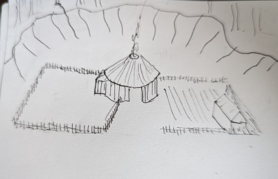
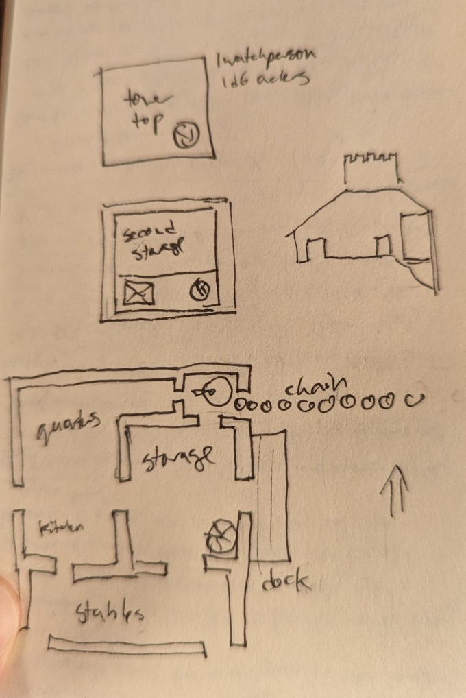
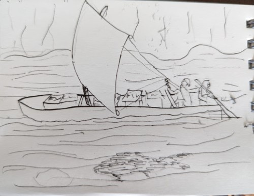
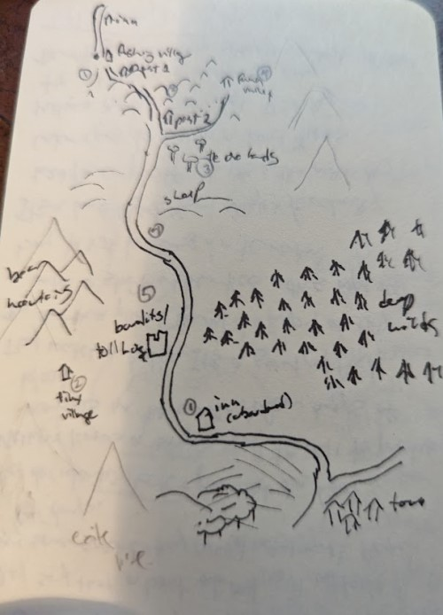

Before we begin
This is a solo game played using Cairn. Part 2 of ??. Previous: here. Character stats are at the bottom, here, community/faction stats are here. I originally took most of my notes on paper, this is a bit of an abbreviated highlight.
Some things I use:
- instead of hirelings, I have a bunch of characters that I rotate in and out as appropriate.
- When someone needs to heal, I have them be out of the game for a bit.
- They might also be spending time doing something that makes sense in game. Also, sometimes a PC might go do something on their own without the others.
I'm making use of a few other resources:
Brief summary of last post
The sisters Melnax and Ygwal set out downstream to find where their parents had disppeared to. They passed through Silver Waters, which they saved from a giant carp, ran into a military outpost, deal with a strange spirit on the road, and then got led astray by the people from Fawa Hills, who try and hold them prisoner so that the sisters won't interfere with their plans for further political independence. In their escape, Ygwal is badly injured.
They escape to a town called The Orchards, who agree to look after Melnax in exchange for gold, but insist that Ygwal leaves. She sets out with a merchant named Krik, who hires her. As they head downstream, they barely manage to evade some bandits who are blockading the river, and as they approach the largest town, they find things have gone wrong.
It's unclear what exactly, but a local innkeeper has been murdered and, later on, some guards try to arrest them. They come out on top and take the guards prisoner, before running into a group who left town recently called The Exiles. After The Exiles demand that Ygwal kill the prisoners (which she does), Krik arranges to trade with them.
Heading back upriver
Ygwal's next priority is to go back to Melnax, who was left back at the town upstream after being injured. Krik, as the merchant captain of the boat, wants to get back to town as well, since it looks like he won't be heading downriver any time soon. But first they have to figure out a way past the bandits.
They decide to scout the surrounding area, starting with the side that didn't have bandits, but don't get far before Avek, one of Krik's crew, stops them. He points to an enormous footprint. "This is nothing natural," he says. "I heard that one doesn't travel in the forest without the guidance of someone who knows its ways, and that we do not have."" And so they resign themselves to the other, closer way.
To their surprise they find a tiny village, clearly new, not far from the bandits. They're raising pigs and growing vegetables - which answers the question of what the bandits were eating. Ygwal suggests taking them prisoner. Pogib (another crew member) wants to wait until night, but Ygwal thinks some of the bandits might return to the village then. They try to lure one into the forest by making a noise, but instead the villager wisely goes back to have a friend accompany her.
Ygwal threatens one with an axe who gets hurt - though not seriously. The other manages to run and call for help, but Pogib grabs him, and drags them off successfully. They then go to the bandits, who don't negotiate very hard - they grant safe passage if the party swears by the river they will not harm the villagers. They keep the villagers with them, though - the bandits should have been more specific.
They travel back to Orchard Town. Krik talks to the leader Edeth, and the militia leader Thuda. Edeth wants to hang the prisoners as bandits, but Thuda says they must keep to Krik's oath, to Krik's releief. Edeth does deicde that they should deal with the bandits by force, though. He and 5 milita members will sieze the village while the rest distract the guardhouse.
The bandits
The party lead by Thuda travels to the village with Ygwal and Melnax by land to avoid being spotted on the river. They head through some mountains above the village, but get ambushed by a cave bear in the process. It grabs one of Thuda's militia members and just snaps him in half. Thuda manages to get the remaidner to form up and hold it at bay with spears, while one hits it with an arrow, and it retreats back to its cave to finish its meal. They take the opportunity to flee - and now there is nowhere for them to retreat to if things go worng in the village.
They make it through a mountain pass and to a lookout above a village. Now, two bandits patrol the village, protecting the remaining 3 villagers. They decide to wait until nightfall. Two archers will be on the overlooking bluff, a rope will be affixed to climb up and down it, and Melnax and Ygwal will torch the village. It goes as planned. One archer takes out one bandit. Another bandit manage to knock another of the militia members unconscious before being taken down, and Melnax and Ygwal drag them to safety. The buildings burn well, and the survivors are taken prisoner. Thuda wants the injured but surviving bandit patched up, if possible. He wants him to stand trial.
After catching their breath and patching everyone up, they head for the tower at the river. They get lucky here - two bandits are sleeping downstairs, and the ones on watch are looking to the river. Ygwal kills one, the other is taken prisoner. They then head up into the tower, but are heard. Ygwal intimidates the prisoner to call the other one down, and then he is taken prisoner. Back outside, the militia signals the boat. The remaining bandit archer fires at the boat, then they rush upstairs. Ygwal is hurt in the scuffle, but they manage to take them and the bandit leader prisoner.
The aftermath
There is now a strategically important tower standing empty. Krik would love to be able to dock there, but his small ship and crew can't defend it. The Orchard's militia is small, and shaken by the recent death of one of their number. Ygwal suggests The Exiles they talked to earlier, but the Orchards fear more bandits - and they guess (correctly) that the bandits might also be people who fled from the town. Ygwal offers to be a go-between.
The bandit leader is executed, at the Shrine of Justice outside town. The rest of the armed bandits are kept prisoner until the Exiles show up. The villagers are spared, but told they will be under close watch.
Between his share of the potato deal, and a reward from the militia for the role he played, Avek is able to set up a blacksmith, with the militia lending him the rest of the money he needs, so long as he works for the militia one day out of seven.
Melnax and Ygwal argue. Melnax thinks Ygwal has become shockingly cruel, and she is also disturbed by the harshness of Ethel. She has also at this point learned more about what Ygwal did when she was recovering. Ygwal says they are learning the world is harsh, and it is a time of upheaval, but soon things will be back to how they once were. Melnax had a dream while she was recovering, and searched out a wise-person to help her, and tells Ygwal she will be taking her own path, at least for now, and she wants no part of Ygwal's.
This is one way that the tag "killer" will come into play. Also, going more with a "grounded" than a "grimdark" approach - some characters will do questionable things, but people will react accordingly, violence is not totally normalized in this world. The leader of the town being "pragmatic" (vs merciful, I need to find a better word but it is kind of a euphemism whenever it comes up as someone's values here) makes her more likely to tolerate this kind of thing. It also complicates things (in a good way) if one of the main characters' close allies are a bit ruthless. Also, I want to split the party so I can try other things with Melnax.
Also, the town The Orchards has been effectively upgraded by Avek retiring from adventuring. The militia will be stronger and it will be possible to buy more metal goods. I intend to have rules for things like making the militia stronger, but haven't done that yet.
Melnax's Path
Kura is the one who interpreted Melnax's dreams, and who also helped in her healing. He takes her to the edge of the forest but says he can go no further. (This is the same forest that Avek refused to enter). He gives her a whistle that he whittled she must promise to return.
She sets off at dawn. The first time she tries, she doubles back to the start, to the camp with Kura. "You aren't sure you want to go," he says. "But be brave, the whistle will guide you home."
She tries again, and returns again. The third time, she finds a thick expanse of darkness. She takes a deep breath and walks inside.
She finds herself in a peaceful field, like a pasture, but instead of sheep, there are wolves eating grass. One stares at her as she passes.
The path through the pasture leads to what looks like her home village. A wolf waits by the path. She turns and goes the other way, deeper into the woods. The forest gets thicker and thicker, and bitterly cold. But she doesn't want to join the wolves.
The trees get bigger and bigger around her as she goes. She comes across people with long, spider-like fingers, bedecked in gold, their faces invisible beneath layers of cloth and jewels. "You are not ready", they say, "and you have come too far..." The fingers reach out towards her. "You do not wish to be a wolf," says another. "You run from the world, so here you must stay..."
She blows on the whistle, and something silvery gallops up. She desperately graps it and her fingers feel like they are freezing under her. It runs and runs and runs, and she finds herself back at the forest's edge and collapses into the ground. "I'm not ready, that's what they said", she says to Kura.
"They are all liars in there," Kura said. "And you stole a horse from them."
"That was your whistle, though".
"No, you just remembered yourself then."
"I think the wolves were my family? Or maybe just Ygwal?"
"It was another choice you were given. I'm sorry. You picked the more dangerous one."
"I don't want to be a killer."
"If nothing else, the life of a swordswoman is closed to you now."
Melnax's fingers feel frozen, and they never quite stop being as stiff.
This let me bring in both a different set of tables from Procedures to Discover the Path Ahead, and also start testing out this idea.
Melnax gained the spell Twilight Steed and now has a Doom stat with which to cast it. She also can no longer use things made of steel. I'm sort of basing it off the Elven background there, but she will get more aspects of it over time, based on the fiction of the story. I also traded Dex and what I rolled for Doom.
The merchants go north
Meanwhile, Pogib and Krik buy some food and head upriver. (get Spirit) Krik feels a strange sense of awe approaching the canyon (makes a will save), and he and Pogib get out of the boat, wade into the river, and place a garland of flowers that they gathered. A fish swims by and takes it away.
They sail quietly and in silence as the sun sets, and land by the soldier's outpost. The soldiers take 1/4 of the potatoes as a tax and Krik acquiesces; the soldiers are otherwise friendly enough. Krik probes them for what they know. They are unaware that the town they serve is in turmoil, or that their counterparts on the other side of the river are missing, and the y re troubled. Silver Waters, upstream, is unlikely to fight for them, but everyone agrees that Fawa must be dealt with and the raod made safe again.
They head to Silver Waters and the potatoes are much appreciated; they trade for salt fish. Korak makes some requests for the next time they are upriver. They pay their respects at the shrine again, and Korak mentions there were more fish when there were more merchants. Perhaps the troubles downstream and the giant carp attack were related in some way; perhaps the god of the river was unhappy.
They continue upstream to check on Melnax and Ygwal's inn. It's been ransacked, but whoever did it is gone. On the way back down, they hear that the carp are starting to return. Unfortunately, due to some bad weather some of the fish are ruined as they head back to the Orchards. The journey was just profitable emough to be able to continue the business and maintain the ship.
Status
This "session" felt largely like resolving loose ends. Also half of the post is setting up the characters and factions. I did get to play with a lot of rules.
Overall it's pretty far from a dungeon crawling adventure; maybe next time I should try some dungeon crawling. Maybe I'll create some new characters and bring them in. One thing that I've played around with more here is the fact that you don't actually need to have a set of characters that are always the focus of the story.
I'm pretty happy I got to try a lot of the new ideas I was interested in. Last session I tried some alternate character generation stuff, and I feel like the random values has done a much better job of giving me a picture of a character than say alignment does. Other things I added that are new:
- Faction rules, which are less rules and more a structured index card
- Starting to develop my idea of what gods are in this setting
- Starting to develop some rules for upgrading factions
- Starting to develop my alternate demi-human rules
An overall theme is banditry. The River Bandits are maybe a cautionary tale of what The Exiles might become - but also maybe Ygwal. There are a lot of violent people in this story, and many of them morally dubious, and what makes one a bandit and the other a mercenary is mostly a matter of how many friends they have. It did kind of coincidentally happen that a lot of people ended up with the "pragmatic" tag which has made the tone a little darker than I originally intended.
Right now there's a danger of everything being about going around and talking to the factions. The main open threads are: resolving the Fawa situation, negotiating an agreement between The Exiles and The Orchard (and probably getting The Exiles to take over the tower). I think I'm going to throw in a new antagonist to keep things interesting. I also want to figure out a parallel thing for Melnax to be doing. Maybe Kura will show up more.
Appendix: Player characters and hirelings
Melnax - starting character STR 9 DEX 12 WIL 13 HP 3 staff (d6) hourglass, fake jewels, airbladder, 25' of rope, cart
She knows a little hedge magic. She values simplicity (as opposed to extravagance), humility and survival.
As of the end of the session, her stats are now STR 9 DEX 6 WIL 13 DOOM 12. She can cast Twilight Steed and cannot touch iron.
Ygwal - starting character STR 8 DEX 11 WIl 7 HP 11 AC 1 axe (d8) fire oil, saw, brigandine
She knows something about boats. She values cunning, boldness and passion. She is a killer.
They also both have a little boat that they left in Silver Waters.
Krik - NPC that hires Ygwal STR 15, DEX 7, WIL 9 HP 6 AC 2 Staff (d6) Chainmail, lockpicks, crowbar, sponge, chisel
Has long braids and thick layers of clothing. He values boldness and novelty. He wants to see the world though he is the son of farmers. He's the head of the merchants, carrying potatoes.
Can upgrade his boat operation as follows, per successful merchant trip:
- Crossbows for crew
- grappling hook and rope
- Spyglass
- Supplies for a longer trip
- x2 trips: upgrade to be able to go on the ocean
Pogib - joins later STR 8 DEX 8 WIL 10 HP 6 AC 3 Staff (d6) chainmail, helmet and shield, 10' pole, nails, marbles, pulley.
Has a limp, wears a thick wool cloak with a fine and intricate border. Values fearlessness and wisdom. A long time bodyguard on the trade route. She doesn't like steel blades - she says you just need a big stick.
Avek - joins later, retired STR 16 DEX 10 WIl 17 HP 6 AC 1 Dagger (d6) brigandine, large trap, hammer, marbles, saw.
Has a large beard, and a fine but tattered yellow silk ribbon around his dagger, hanging promimently from his waist. Values frugality and wisdom. Has some blacksmithing experience, but not the money to set up his own forge. He's hoping to make some by acting as a bodyguard for merchants.
By the end of this post, he has retired and become a blacksmith.
Appendix: NPCs
Kura the witch STR 7 DEX 14 WIl 16 HP 2 AC 1 Dagger (d6) cart, shovel, whistle.
Values humility, impartiality (vs loyalty)
Youthful face, large felt hat, short.
Knows how to hunt, has small animal traps, as well as some basic healing. Also knows the spells Scry and Mirrorwalk, but requires a perfectly still pool of water to use them.
The Great Carp - local god
Powers can be approximated by the following spells: animal call, dreampoison, fish lung, illuminate, greed, flood, sinister polymorph.
Values selflessness, cunning, extravagance.
Can take the form of a fanged and clawed humanoid.
Found by Silvery Waters and the nearby canyon.
Gives freely and expects to be honoured for it. Delights in mischief and troublemaking, has a dangerous sense of humour. Will swamp boats that don't pay tribute; the truly wicked are transformed into fish. Will also send a deadly carp if disrespected. Feels neglected if not enough boats pass through.
The God of the Bridge - local god
Powers can be approximated by the following spells: command, hyptonize, identify owner, read mind, vision, scry
Values frugality and justice.
Governs the town of The Orchards.
The builder of the bridge swore no evil shall pass over it, and so evildoers must die on the bridge. The judge puts on a heron mask and carries out the will of the god - while wearing the mask, the stain is non on their soul. It is said if evil is allowed to pass the axles of wagons will break and ships will sink. A frightening god, and one not celebrated by any holidays.
Those who ask him for justice may find the evildoer by speaking to him, but must give away all gold, refrain from meat or alcohl, and sleep three nights alone on the bridge. On the third night he comes.
Appendix: Communities
Silver Waters - a fishing village
Contains 4 longhouses, communal storage, a fish drying hut.
| Leader | Korak, unofficial. Values wisdom, caution. Has fish tattoos. Skilled boater. Scars from a giant catfish attack. Stats as sailor. |
| Population | 30 villagers, 10 could fight in a pinch |
| Common values | loyalty, wisdom |
| Strengths | self sufficient, remote |
| Weaknesses | small,isolated |
| Attitude | friendly to all PCs, at the moment |
Resources:
- Food: for self, a few visitors
- Boat repair
- A local god
- Simple rope and wood tools, boats
- Simple healing
The Orchards - small town
Small walled town serves outlying fields and orchards. Breadbasket of the region, well off.
| Leader | Edeth: appointed for last 20 years. Values pragmatism (vs mercy), caution. Ostentatious embroidered coin purse. Stats as merchant. |
| Population | 100 villagers. 10 militia, 25 more could fight in a pinch. Militia lader: Thuda (stats as official). Values impartiality, frugality. Wears a demon mask when on duty. |
| Common values | frugality, humility |
| Strengths | abundance, relative size |
| Weaknesses | spread out, hard to defend |
| Attitude | previously suspicious, now sees the PCs as useful allies |
| Faction relationships | Enemies of Fawa, river bandits |
Resources:
- Food: for self, visitors, surplus to trade
- Weekly market with common goods
- A reasonably skilled healer
- A blacksmith (as of end of session)
The Exiles
A group living in the forest. Not quite bandits, for now.
| Leader | Tijik: values pragmatism (vs mercy), loyalty. Felt orange hat. Killer. (stats as brigand leader) Also Taza: values extravagance, wisdom. Ostentatious earrings. This is his land but he took them in. (Stats as witch.) |
| Population | 20 refugees, 5 core fighters (as brigands), 10 poachers. |
| Common values | loyalty, pragmatism |
| Opportunities | Help them overthrow the new leaders of the Big Town? |
| Strengths | loyal, united |
| Weaknesses | desperate, no land, need to steal to survive |
| Attitude | previously suspicious, now sees the PCs as useful allies |
| Faction relationships | Enemies of the Big Town. The Orchards view them with suspicion. view the River Bandits as deserters. |
Resources:
- Stolen weapons
The Camp at the Falls - military post
Provide security for the area, collect taxes.
| Leader | Holl - captain. Honest, pragmatic, scarred, cloak fastener has badge of office |
| Population | 5 soldiers. There used to be 5 more on the other side of the canyon but they're missing. |
| Common values | honesty, pragmatism |
| Opportunities | Want to restore order, find their missing companions |
| Strengths | large food stores for population. Knowledgeable about the area. Actual military training. Political legitimacy (for now). |
| Weaknesses | small, cut off from everyone |
| Attitude | Pleasant but indifferent. Merchants must pay taxes. |
| Faction relationships | Fawa raided and destroyed their outpost, they don't know that yet. They are nominally allied with Big Town but don't know about the recent changes. |
Resources:
- Food for self + surplus
- Defensible tower
- Boat
River bandits - antagonist faction
Faction no longer exists by the end of the session.
Split off from the exiles - tired of being hungry and scared. Seized a tower but don't know what to do next. Increasingly desperate.
| Leader | Ola: values self-presevation, extravagance. Bold tarnished copper medal from military service. (stats as brigand leader) |
| Population | 8 poachers, 2 on guard at any time. 5 villagers, not fighters. |
| Common values | self-preservation |
| Opportunities | If defeated, get credibility with The Orchards and THe Exiles, and a nice tower |
| Strengths | tight-knit group, defensible tower |
| Weaknesses | no allies, no legitimacy |
| Attitude | Will attack anyone who seems like a reasonable target. |
| Faction relationships | Enemies of the Exiles (considers them deserters), Big Town (considers them outlaws), Orchards (affected by raids) |
Resources:
- Enough food to survive
Fawa Valley
Grows fibres and rope for export primarily. Has long resented the weathier downstream towns. Young heir after the previous one was killed by the Big Town.
| Leader | Javik: levelheaded, pragmatic. Young and inexperienced. |
| Population | 20 or so villagers, 6 sworn swords (1 injured, 2 would recognize PCs). |
| Common values | pragmatism, frankness. |
| Opportunities | Shared emnity with Big Town? Looking for new trading opportunities |
| Strengths | Remote, close-knit, military skill |
| Weaknesses | Small population, poverty |
| Attitude | Very negative to Melnax and Ygwal, they burned his guesthouse down. |
| Faction relationships | Enemies of Orchards (who considers them bandits), Big Town (long-simmering resentment) |